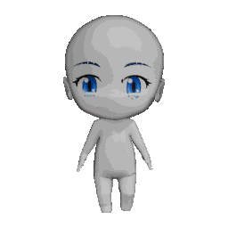
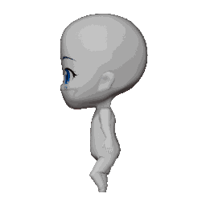
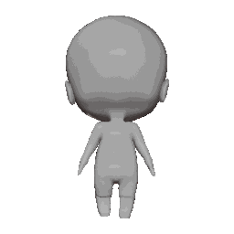
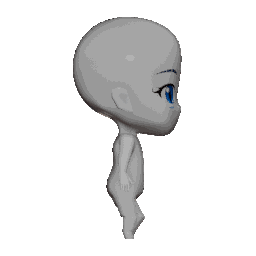
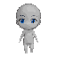
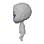
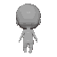
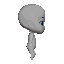

Mixamo 骨骼动画实验
本页由 tools/build_mixamo_animation_gallery.py 生成。四向 GIF 同时展示 3D 渲染和 64×64 像素化结果；所有条目都标记为 WIP 候选，最终动作需继续检查膝盖、腿根和手臂摆动方向。
Walk · release baseline v78 · ear forward +0.025
WIP 候选：用于观察骨骼重定向，不代表最终动作。
四向 3D 渲染




四向像素化预览



